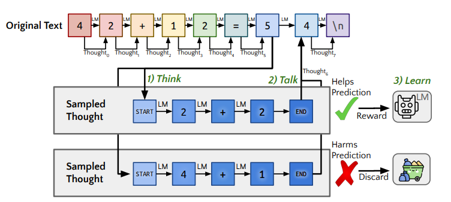
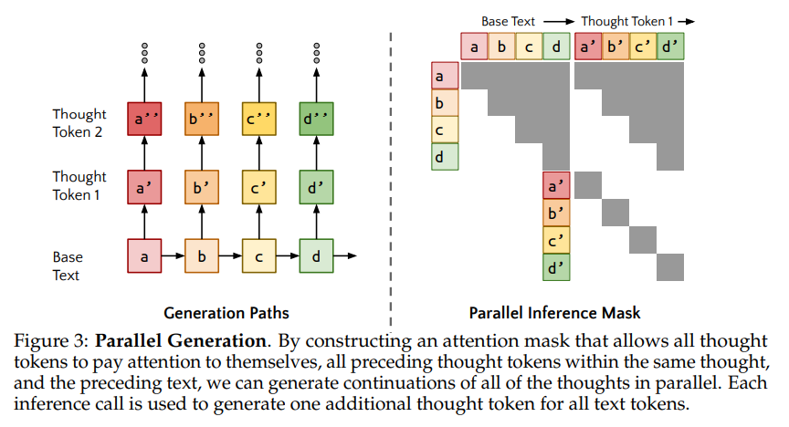
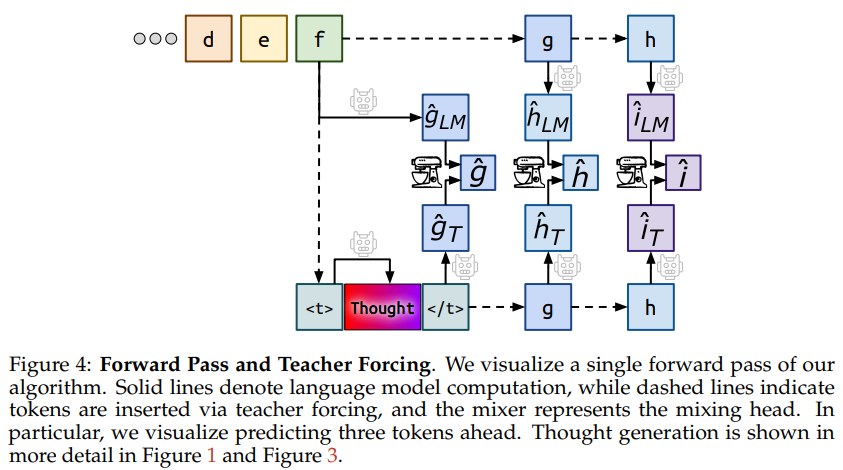
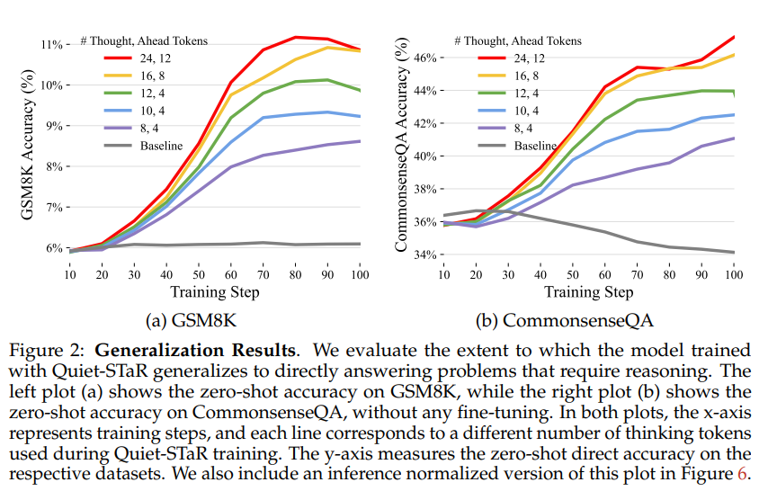
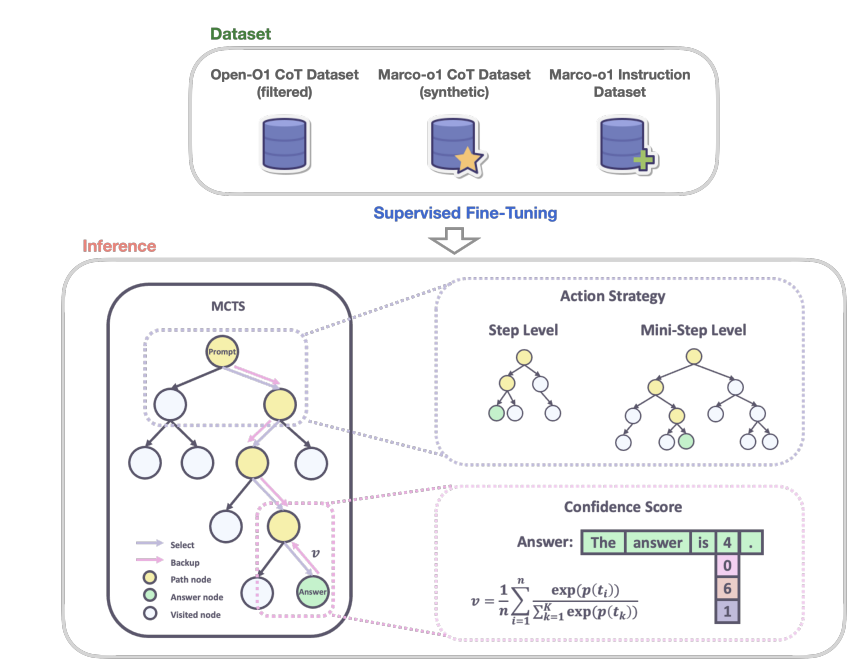
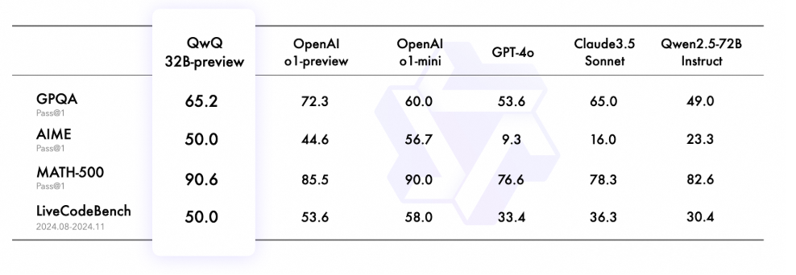
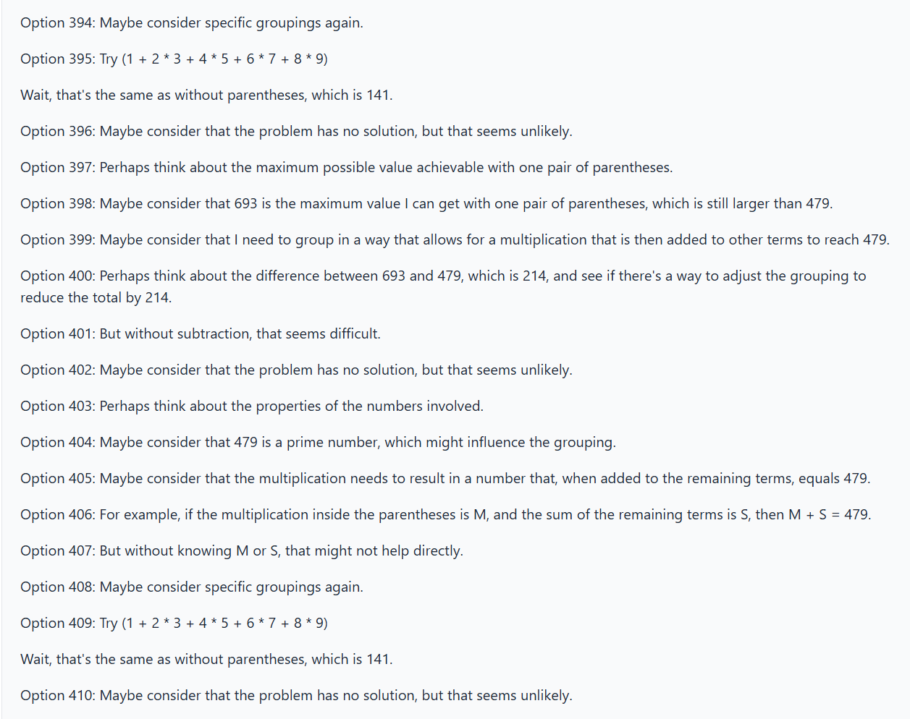

Thinking Tokens
Thinking tokens concept (also known as reasoning tokens) enables more intelligence to large models during inference. Until now, the rule to get more intelligent models was only possible through pre-training large model following the “scaling laws”, i.e. adding more training data and computing to pretrain large models.
Now with the concept of “thinking tokens” you can achieve more intelligence with the introduction of a model reasoning while doing the next token prediction.
<|startofthought|> and <|endofthought|>
The idea of thinking tokens has been introduced by some authors such as Quiet-STaR: Language Models Can Teach Themselves to Think Before Speaking, o1 model from OpenAI and latest DeepSeek-R1. Thinking tokens are named reasoning tokens by OpenAI.
The basic concept is to generate “thinking tokens” at inference time to help model to predict next token. A key challenge is to efficiently generate rationales at each token position in the input sequence. However, as pointed out by simply creating a separate forward pass for each token would be computationally intractable for longer sentences.

Picture: Quiet-STaR
According to authors, this is done at the inference pass of a language model, when it produces the probability distribution over the next tokens for all input tokens. The solution in Quiet-STaR implements it by caching each forward pass and concatenating a diagonal attention mask to the previous attention mask. Thus each generated token attends to all of the tokens that were used to generate it, as well as itself. But it does not consider the token on the other “counterfactual” paths.

Interestingly, not all tokens requires equal amount of thought .
Interestingly, not all tokens requires equal amount of thought . Thus the thinking token technique does not benefit all tokens equally. For example the sentence “the person is run-”, the “ing” is most probably the token with highest probability and there the additional thinking is unlike to improve a well-trained prediction model.
Thus complex reasoning task such as GSM8K are the ones that would benefit more from the thinking token technique.

Results:
Amount of thinking tokens increase the accuracy of the models.
As show in figure below, more thinking tokens improve the GSM8K accuracy as the training steps icreases.

Latest Developments:
Marco-o1 by MacoPolo Team in Alibaba
Marco-o1 is inspired by OpenAI o1 and leverages different techniques such as:
- CoT (Chain of Thought) fine-tuning
- MCTS (Monte Carlo Tree Search): allow exploration of multiple reasoning paths using confidence scores derived from softmax-applied log probability of the top-k alternative tokens.
- Reasoning Action Strategies: allow to vary granularity of actions within steps and mini-steps to optimize search efficiency and accuracy -
Marco-o1 is a fine tuning of Qwen2-7B-Instruct with a combination of filtered Open-O1 CoT dataset, Marco-o1 CoT dataset and Marco-o1 instruction dataset.

Picture from Marco-o1
**MCTS (Monte Carlo Tree Search):
The Monte Carlo Tree Search enhance the reasoning capability of the model and it is integrated in the model as following:
- Nodes as reasoning states: each node represents a reasoning state of the problem-solving process.
- Actions as LLM outputs: the possible actions from a node are the LLM generated outputs. Each output is a potential step or mini-step in the reasoning chain.
- Rollout and reward calculation: during rollout, the LLM continues the reasoning to a terminal state.
- Guiding MCTS: the reward score R is used to evaluate and select promising paths within the MCTS, guiding the search towards a reliable reasoning chains.
Figure above show v, the average confidence score across all tokens to derive the overall reward score. Where n is the total number of tokens in the rollout sequence. A higher v indicates a more confident and accurate reasoning path.
The confidence score of each state c is calculated by applying a softmax function to its log probability and the log probabilities of the top 5 alternative tokens. Thus ci is the confidence score for the ith token in the rollout. \[ c_{i} = \frac{exp(p(t_{i}))}{\sum_{k=1}^{5}{exp(p(t_{k}))}} \]
Reasoning Action Strategies:
Reasoning action strategies is implemented to allow different levels of granularity in the MCTS search. For example, the concept of mini-steps represents a search space in MCTS in steps composed by smaller units of 64 or 32 tokens. According to authors, it is impractical due to computational resources to execute token level search.
- step as action: model generate complete reasoning steps as actions, where each MCTS node represents an entire thought or action label.
- Mini-step as action: mini-steps of 32 or 64 tokens used as action giving finer granularity to expand the solution space and improve model ability to reasoning tasks by considering mode nuances steps in the search process.
A reflection mechanism “Wait! Maybe I made some mistakes! I need to rethink from scratch.” is added at the end of each though process. This allow the model to self reflect and reevaluate its reasoning steps. As described by authors, the reflection step serves as an internal feedback loop allowing the model to self correct without external intervention.
Experiences with QnQ:
Qwen with Questions (QwQ) from Alibaba is a strong open-source competitor to OpenAI’s GPT-o1 reasoning model. QwQ is available in a 32-billion-parameter preview version with a 32,000-token context.
Based on the blog QwQ: Reflect Deeply on the Boundaries of the Unknown, QnQ has provided important capabilities in challenging mathematical and programming datasets, like:
- GPQA: A Graduate-Level Google-Proof Q&A Benchmark, a challenging benchmark for evaluating scientific problem-solving abilities through grade school level questions.
- AIME: American Invitation Mathematics Evaluation, which tests mathematical problem solving with arithmetic, algebra, counting, geometry, number theory, and probability and other secondary school math topics.
- MATH-500: The 500 test cases of the MATH benchmark, a comprehensive dataset testing mathematical problem-solving.
- LiveCodeBench: A challenging benchmark for evaluating code generation and problem solving abilities in real-world programming scenarios.
Results below show QnQ graduate-level scientific reasoning.

To verify it, I used the QnQ model deployed in HuggingFace here and prompted the same question as in the blog. See section below the “not-so-great” results, which does not follow the results shown by the blog.
Experiments with QnQ 32B preview
Prompt: Please add a pair of parentheses to the incorrect equation: 1 + 2 * 3 + 4 * 5 + 6 * 7 + 8 * 9 = 479, to make the equation true.
Answer: No
Date: 02.12.2024

References:
Quiet-STaR: Language Models Can Teach Themselves to Think Before Speaking
O1 Replication Journey: A Strategic Progress Report by Qin et. al
Model: Marco-o1: Towards Open Reasoning Models for Open-Ended Solutions
Model: Open O1: A Model Matching Proprietary Power with Open-Source Innovation
Dataset: Open O1 SFT